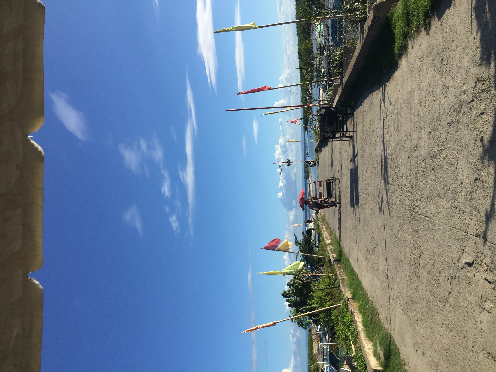
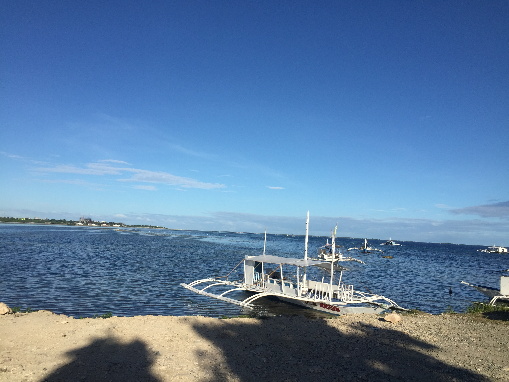

To all beach lovers allow me to endorse you the Bantayan Bay you will definitely bet on to take a swim when you see the crystal clear waters in Cordova, Cebu.
 
This beach is a white sandbar with mangroves just a few meters away from the shores of Cordova.
It boasts beautiful turquoise waters that glisten like glass on a bright, sunny day.
An ideal summer destination with crystal clear water especially when it’s high tide and a perfect place for family and friends to chill and have fun in its wonderful floating cottages and sand bar.
A great experience with beautiful scenery of sunrise and sunset can also be spotted here.